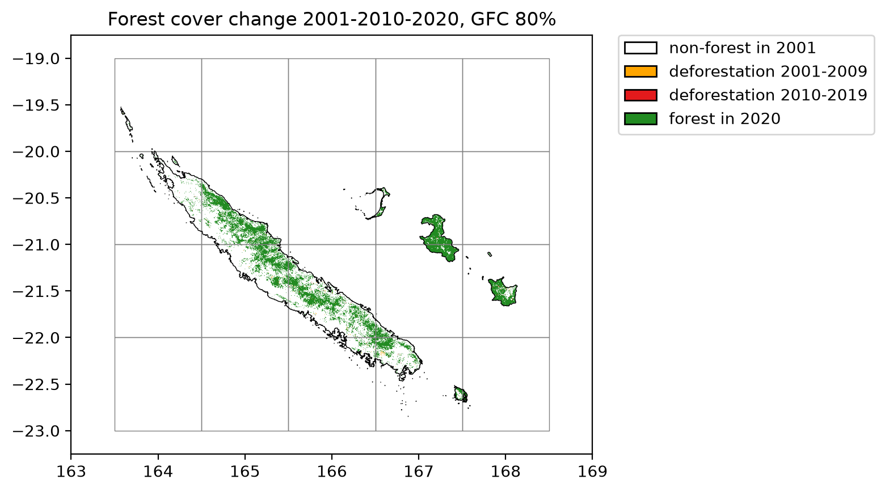
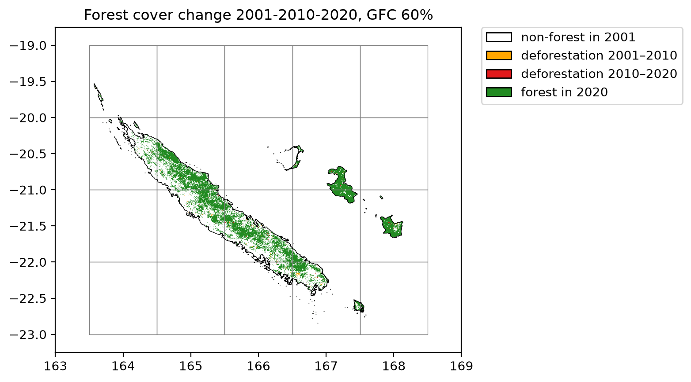

New Caledonia¶
Downloading data in parallel¶
We can use geefcc to download forest cover change for large countries, for example New-Caledonia. The country will be divided into several tiles which are processed in parallel. If your computer has n cores, n-1 cores will be used in parallel.
import os
import time
import ee
import numpy as np
import pandas as pd
from osgeo import gdal
from geefcc import get_fcc, sum_raster_bands
import geopandas
import matplotlib.pyplot as plt
from matplotlib.colors import ListedColormap
import matplotlib.patches as mpatches
from tabulate import tabulate
We initialize Google Earth Engine.
# Initialize GEE
ee.Initialize(project="deforisk",
opt_url=("https://earthengine-highvolume."
"googleapis.com"))
We can compute the number of cores used for the computation.
ncpu = os.cpu_count() - 1
ncpu
7
Using TMF product¶
Downloading data¶
We download the forest cover change data from GEE for New Caledonia for years 2001, 2010 and 2020, using a tile size of one degree. We use the TMF product (version v1_2025 available in geefcc).
start_time = time.time()
get_fcc(
aoi=(163.5, -23, 168.15, -19.51),
buff=0.0,
years=[2001, 2010, 2020],
source="tmf",
tile_size=1.0,
crop_to_aoi=True,
output_file="out_tmf/forest_tmf.tif",
parallel=True,
ncpu=ncpu)
end_time = time.time()
get_fcc running, 20 tiles .....................
We estimate the computation time to download 20 1-degree tiles using several cores.
elapsed_time = (end_time - start_time) / 60
print('Execution time:', round(elapsed_time, 2), 'minutes')
Execution time: 1.2 minutes
Transform multiband fcc raster in one band raster¶
We transform the data to have only one band describing the forest cover change with 0 for non-forest, 1 for deforestation on the period 2000–2009, 2 for deforestation on the period 2010–2019, and 3 for the remaining forest in 2020. To do so, we just sum the values of the raster bands.
sum_raster_bands(input_file="out_tmf/forest_tmf.tif",
output_file="out_tmf/fcc_tmf.tif",
verbose=False)
We resample at a lower resolution for plotting.
infn = "out_tmf/fcc_tmf.tif"
outfn = "out_tmf/fcc_tmf_coarsen.tif"
scale = gdal.Open(infn).GetGeoTransform()[1]
xres = 20 * scale
yres = 20 * scale
resample_alg = "near"
ds = gdal.Warp(outfn, infn, xRes=xres, yRes=yres, resampleAlg=resample_alg)
ds = None
Plot the forest cover change map¶
We prepare the colors for the map.
# Colors
cols=[(255, 165, 0, 255), (227, 26, 28, 255), (34, 139, 34, 255)]
colors = [(1, 1, 1, 0)] # transparent white for 0
cmax = 255.0 # float for division
for col in cols:
col_class = tuple([i / cmax for i in col])
colors.append(col_class)
color_map = ListedColormap(colors)
# Labels
labels = {0: "non-forest in 2001", 1:"deforestation 2001-2009",
2:"deforestation 2010-2019", 3:"forest in 2020"}
patches = [mpatches.Patch(facecolor=col, edgecolor="black",
label=labels[i]) for (i, col) in enumerate(colors)]
We create a short function to plot the forest cover change map.
def plot_fcc(title, out_file):
fig = plt.figure()
ax = plt.subplot(111)
ax.imshow(raster_image, cmap=color_map, extent=extent,
resample=False)
ax.set_aspect("equal")
grid_image = grid.boundary.plot(ax=ax, color="grey", linewidth=0.5)
borders_image = borders.boundary.plot(ax=ax, color="black", linewidth=0.5)
plt.title(title)
plt.legend(handles=patches, bbox_to_anchor=(1.05, 1), loc=2, borderaxespad=0.)
plt.xlim((163, 169))
plt.ylim((-23.25, -18.75))
fig.savefig(out_file, bbox_inches="tight", dpi=200)
plt.close(fig)
We load the data: country borders and grid. The borders can be downloaded from the gadm website.
# Borders
borders_gpkg = os.path.join("data", "borders_NCL.gpkg")
borders = geopandas.read_file(borders_gpkg)
# Grid
grid_gpkg = os.path.join("out_tmf", "grid.gpkg")
grid = geopandas.read_file(grid_gpkg)
We plot the forest cover change map.
with gdal.Open("out_tmf/fcc_tmf_coarsen.tif", gdal.GA_ReadOnly) as ds:
raster_image = ds.ReadAsArray()
nrow, ncol = raster_image.shape
xmin, xres, _, ymax, _, yres = ds.GetGeoTransform()
extent = [xmin, xmin + xres * ncol, ymax + yres * nrow, ymax]
plot_fcc("Forest cover change 2001-2010-2020, TMF", "fcc_tmf.png")
{kind=link}
Lines in black represent country borders. One degree tiles in grey cover the whole buffer and were used to download the data in parallel.
Reproject in EPSG:3163 for area computation¶
ifile = os.path.join("out_tmf", "fcc_tmf.tif")
ofile = os.path.join("out_tmf", "fcc_tmf_epsg3163.tif")
ds = gdal.Warp(ofile, ifile, xRes=30, yRes=30, dstSRS="EPSG:3163", resampleAlg="near",
targetAlignedPixels=True, creationOptions=["COMPRESS=DEFLATE"])
ds = None
Compute statistics¶
We use the tool “Raster layer unique values report” in QGIS to get the number of pixels per pixel value in the raster.
pixel_count = [n1, n2, n3] = [291545, 258015, 9381325]
areas = [round(i * (30 * 30 / 10000)) for i in pixel_count]
tmf_areas= {"product": "tmf", "version": "v1_2025", "perc": "",
"fc2001": areas[0] + areas[1] + areas[2],
"fc2010": areas[1] + areas[2], "fc2020": areas[2],
"d1": round(areas[0] / 9), "d2": round(areas[1] / 10)}
print(tmf_areas)
{'product': 'tmf', 'version': 'v1_2025', 'perc': '', 'fc2001': 893779, 'fc2010': 867540, 'fc2020': 844319, 'd1': 2915, 'd2': 2322}
Using GFC product and tree cover \(\ge\) 80%¶
Downloading data¶
We download the forest cover change data from GEE for New Caledonia for years 2001, 2010 and 2020, using a tile size of one degree. We use the GFC product (version v1_11 available in geefcc) and a tree cover percentage \(\ge\) 80 to define the forest.
start_time = time.time()
get_fcc(
aoi=(163.5, -23, 168.15, -19.51),
buff=0.0,
years=[2001, 2010, 2020],
source="gfc",
perc=80,
tile_size=1.0,
crop_to_aoi=True,
output_file="out_gfc80/forest_gfc80.tif",
parallel=True,
ncpu=ncpu)
end_time = time.time()
We estimate the computation time to download 20 1-degree tiles using several cores.
elapsed_time = (end_time - start_time) / 60
print('Execution time:', round(elapsed_time, 2), 'minutes')
Execution time: 1.0 minutes
Transform multiband fcc raster in one band raster¶
We transform the data to have only one band describing the forest cover change with 0 for non-forest, 1 for deforestation on the period 2001–2009, 2 for deforestation on the period 2010–2019, and 3 for the remaining forest in 2020. To do so, we just sum the values of the raster bands.
sum_raster_bands(input_file="out_gfc80/forest_gfc80.tif",
output_file="out_gfc80/fcc_gfc80.tif",
verbose=False)
We resample at a lower resolution for plotting.
infn = "out_gfc80/fcc_gfc80.tif"
outfn = "out_gfc80/fcc_gfc80_coarsen.tif"
scale = gdal.Open(infn).GetGeoTransform()[1]
xres = 20 * scale
yres = 20 * scale
resample_alg = "near"
ds = gdal.Warp(outfn, infn, xRes=xres, yRes=yres, resampleAlg=resample_alg)
ds = None
Plot the forest cover change map¶
We prepare the colors for the map.
# Colors
cols=[(255, 165, 0, 255), (227, 26, 28, 255), (34, 139, 34, 255)]
colors = [(1, 1, 1, 0)] # transparent white for 0
cmax = 255.0 # float for division
for col in cols:
col_class = tuple([i / cmax for i in col])
colors.append(col_class)
color_map = ListedColormap(colors)
# Labels
labels = {0: "non-forest in 2001", 1:"deforestation 2001-2009",
2:"deforestation 2010-2019", 3:"forest in 2020"}
patches = [mpatches.Patch(facecolor=col, edgecolor="black",
label=labels[i]) for (i, col) in enumerate(colors)]
We plot the forest cover change map.
with gdal.Open("out_gfc80/fcc_gfc80_coarsen.tif", gdal.GA_ReadOnly) as ds:
raster_image = ds.ReadAsArray()
nrow, ncol = raster_image.shape
xmin, xres, _, ymax, _, yres = ds.GetGeoTransform()
extent = [xmin, xmin + xres * ncol, ymax + yres * nrow, ymax]
plot_fcc("Forest cover change 2001-2010-2020, GFC 80%", "fcc_gfc80.png")
{kind=link}

Lines in black represent country borders. One degree tiles in grey cover the whole buffer and were used to download the data in parallel.
Reproject in EPSG:3163 for area computation¶
ifile = os.path.join("out_gfc80", "fcc_gfc80.tif")
ofile = os.path.join("out_gfc80", "fcc_gfc80_epsg3163.tif")
ds = gdal.Warp(ofile, ifile, xRes=30, yRes=30, dstSRS="EPSG:3163", resampleAlg="near",
targetAlignedPixels=True, creationOptions=["COMPRESS=DEFLATE"])
ds = None
Compute statistics¶
pixel_count = [n1, n2, n3] = [41624, 27874, 7275205]
areas = [round(i * (30 * 30 / 10000)) for i in pixel_count]
gfc80_areas= {"product": "gfc", "version": "v1_13(2025)", "perc": 80,
"fc2001": areas[0] + areas[1] + areas[2],
"fc2010": areas[1] + areas[2], "fc2020": areas[2],
"d1": round(areas[0] / 9), "d2": round(areas[1] / 10)}
print(gfc80_areas)
{'product': 'gfc', 'version': 'v1_13(2025)', 'perc': 80, 'fc2001': 661023, 'fc2010': 657277, 'fc2020': 654768, 'd1': 416, 'd2': 251}
Using GFC product and tree cover \(\ge\) 60%¶
Downloading data¶
We download the forest cover change data from GEE for New Caledonia for years 2000, 2010 and 2020, using a tile size of one degree. We use the GFC product (version v1_11 available in geefcc) and a tree cover percentage \(\ge\) 60 to define the forest.
start_time = time.time()
get_fcc(
aoi=(163.5, -23, 168.15, -19.51),
buff=0.0,
years=[2001, 2010, 2020],
source="gfc",
perc=60,
tile_size=1.0,
crop_to_aoi=True,
output_file="out_gfc60/forest_gfc60.tif",
parallel=True,
ncpu=ncpu)
end_time = time.time()
We estimate the computation time to download 20 1-degree tiles using several cores.
elapsed_time = (end_time - start_time) / 60
print('Execution time:', round(elapsed_time, 2), 'minutes')
Execution time: 1.12 minutes
Transform multiband fcc raster in one band raster¶
We transform the data to have only one band describing the forest cover change with 0 for non-forest, 1 for deforestation on the period 2001–2009, 2 for deforestation on the period 2010–2019, and 3 for the remaining forest in 2020. To do so, we just sum the values of the raster bands.
sum_raster_bands(input_file="out_gfc60/forest_gfc60.tif",
output_file="out_gfc60/fcc_gfc60.tif",
verbose=False)
We resample at a lower resolution for plotting.
infn = "out_gfc60/fcc_gfc60.tif"
outfn = "out_gfc60/fcc_gfc60_coarsen.tif"
scale = gdal.Open(infn).GetGeoTransform()[1]
xres = 20 * scale
yres = 20 * scale
resample_alg = "near"
ds = gdal.Warp(outfn, infn, xRes=xres, yRes=yres, resampleAlg=resample_alg)
ds = None
Plot the forest cover change map¶
We plot the forest cover change map.
with gdal.Open("out_gfc60/fcc_gfc60_coarsen.tif", gdal.GA_ReadOnly) as ds:
raster_image = ds.ReadAsArray()
nrow, ncol = raster_image.shape
xmin, xres, _, ymax, _, yres = ds.GetGeoTransform()
extent = [xmin, xmin + xres * ncol, ymax + yres * nrow, ymax]
plot_fcc("Forest cover change 2001-2010-2020, GFC 60%", "fcc_gfc60.png")
{kind=link}

Lines in black represent country borders. One degree tiles in grey cover the whole buffer and were used to download the data in parallel.
Reproject in EPSG:3163 for area computation¶
ifile = os.path.join("out_gfc60", "fcc_gfc60.tif")
ofile = os.path.join("out_gfc60", "fcc_gfc60_epsg3163.tif")
ds = gdal.Warp(ofile, ifile, xRes=30, yRes=30, dstSRS="EPSG:3163", resampleAlg="near",
targetAlignedPixels=True, creationOptions=["COMPRESS=DEFLATE"])
ds = None
Compute statistics¶
pixel_count = [n1, n2, n3] = [73854, 60386, 9860124]
areas = [round(i * (30 * 30 / 10000)) for i in pixel_count]
gfc60_areas= {"product": "gfc", "version": "v1_13(2025)", "perc": 60,
"fc2001": areas[0] + areas[1] + areas[2],
"fc2010": areas[1] + areas[2], "fc2020": areas[2],
"d1": round(areas[0] / 9), "d2": round(areas[1] / 10)}
print(gfc60_areas)
{'product': 'gfc', 'version': 'v1_13(2025)', 'perc': 60, 'fc2001': 899493, 'fc2010': 892846, 'fc2020': 887411, 'd1': 739, 'd2': 544}
Summary of the results¶
res_df = pd.DataFrame([tmf_areas, gfc80_areas, gfc60_areas])
res_df.to_csv(os.path.join("comparison_geefcc_nc.csv"), index=False)
tabulate(res_df, headers=res_df.columns, tablefmt="orgtbl")
product |
version |
perc |
fc2001 |
fc2010 |
fc2020 |
d1 |
d2 |
|
|---|---|---|---|---|---|---|---|---|
0 |
tmf |
v1_2025 |
893779 |
867540 |
844319 |
2915 |
2322 |
|
1 |
gfc |
v1_13(2025) |
80 |
661023 |
657277 |
654768 |
416 |
251 |
2 |
gfc |
v1_13(2025) |
60 |
899493 |
892846 |
887411 |
739 |
544 |
Forest cover for TMF and GFC with tree cover \(\ge\) 60% are similar in 2020 (about 850,000 ha) but the annual deforestation is 4-5 times lower when using the GFC product (e.g. 544 ha/yr for GFC in the period 2010–2020 against 2322 ha/yr for TMF for the same period).